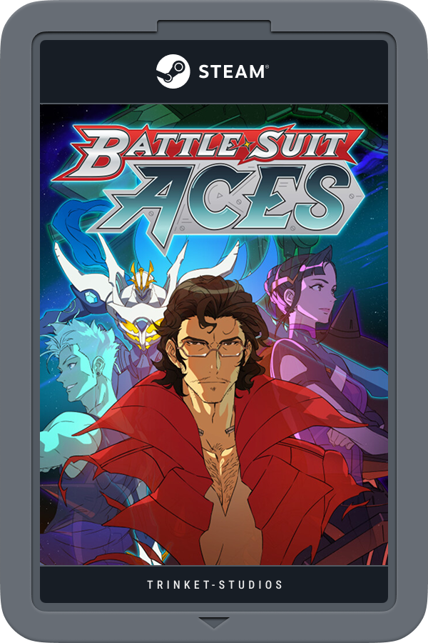

Battle Suit Aces
Every archived year-end list appearance, including placement and points earned.
About the Game
From the creators of Battle Chef BrigadeEmbark on a heartfelt journey through the stars on the USS Zephyr, joining Captain Heathcliff and his ragtag crew as they search the galaxy for fabled Relic Suits. Sojourn through monster-infested galactic wilds, leading your crew through danger, tragedy, and comedic sci-fi shenanigans.🍖 Enter a mecha and monster-filled world from the award-winning Battle Chef Brigade team🚀 Embark on a personalized adventure full of memorable fully-voiced characters🤖 Carefully guide your eager pilots to win streamlined 5 vs 5 card battles🃏 Add to your deck from 5 specialist Factions and mod them into a synergistic teamThe Second Voice is calling. Will you listen?Each turn, deploy your hand-picked pilots to the Battle Line. Decide who should attack the incoming monsters, shield your Ship, or be swapped out for a fresh Battle Suit.Will you hit every enemy at once with the boisterous Daciana or target the heart of the problem with the analytical Yan? Pilot abilities play off each other, inviting you to try new pilot and mod combinations against ever-evolving foes.To grow your crew and deck of mecha cards, you'll forge bonds with space pirates, paranormal investigators, starball athletes, and more. Each Faction offers a unique battle style along with their set of eccentric pilots.Inspired by old-school mecha anime, Battle Suit Aces is about saving the galaxy with your found family using ancient alien superweapons. Enter into the hand-crafted world, filled with thoughtful and stylish characters prepared to dazzle.Your personalized adventure is determined by the Factions you court, the pilots you befriend, and the dialogue choices you make. From kicking out oceanside oppressors, infiltrating corrupt corporate facilities, attending a Battle Suit gala, competing in starball, and so much more, your journey truly reflects the choices you make in the game.Get to know your crew’s strengths and strategically deploy them in battle. Uncover the rich lives of over 50 fully-voiced characters and learn what makes them tick. Charming, vibrant art reminiscent of your favorite anime comes to life while the orchestral soundtrack welcomes you into the whimsically warm atmosphere.Between missions, spend time on your bustling ship. Get to know your endearing crew over a meal, practice card synergies in the Sim Chamber, craft handy Drones, install powerful mods in your favorite cards, upgrade your ship to support your pilots in battle, handle Faction bounties, and plot a course to your next mission.Mod and battle slots are limited, so prepare carefully. You’ll need a varied deck to counter Battle Suit Aces' suite of villains, who have dangerous abilities and synergies of their own. Your unique build and deployment strategy lets you maximize impact and time with your favorite crewmembers. Welcome aboard!
| Released | 2025-10-07 |
|---|---|
| Developer | Trinket Studios |
| Publisher | Outersloth, Trinket Studios |
| Genres | RPG, Strategy, Card, Indie |
| Platforms | macOS, PC |
SingleplayerSteam AchievementsFull controller supportSteam CloudRPGStory Rich2DSci-fiTacticalAnimeChoices MatterColorful
Where to Buy
Game information provided by RAWG.
Points by Year
List History
| Year | Source | List | Placement | Points |
|---|---|---|---|---|
| 2025 | GQ | The 20 Best Video Games of 2025 | 19 | 3 |